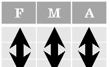
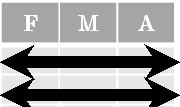
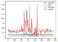
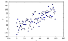
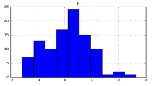
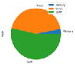
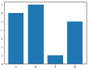
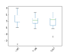
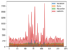
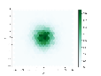

Data Wrangling with pandas Cheat Sheet http://pandas.pydata.org
&


Tidy data complements pandas’s vectorized operations. pandas will automatically preserve observations as you manipulate variables. No other format works as intuitively with pandas.
In a tidy data set:
Each observation is saved in its own row
Pandas API Reference Pandas User Guide
pd.melt(df)Gather columns into rows. |
df.pivot(columns='var', values='val')Spread rows into columns. |
||||||||||||||||||||||||||||||||||||||||||||||||||||||||||||||||||
|---|---|---|---|---|---|---|---|---|---|---|---|---|---|---|---|---|---|---|---|---|---|---|---|---|---|---|---|---|---|---|---|---|---|---|---|---|---|---|---|---|---|---|---|---|---|---|---|---|---|---|---|---|---|---|---|---|---|---|---|---|---|---|---|---|---|---|---|
pd.concat([df1,df2])Append rows of DataFrames |
pd.concat([df1,df2], axis=1)Append columns of DataFrames |
a |
b |
c |
|
|---|---|---|---|
1 |
4 |
7 |
10 |
2 |
5 |
8 |
11 |
3 |
6 |
9 |
12 |
df.sort_values('mpg')
Order rows by values of a column (low to high). df.sort_values('mpg', ascending=False) Order rows by values of a column (high to low). df.rename(columns = {'y':'year'})
df = pd.DataFrame( {"a" : [4, 5, 6],
Rename the columns of a DataFrame df.sort_index()
"b" : [7, 8, 9],
"c" : [10, 11, 12]},
index = [1, 2, 3]) Specify values for each column.
Sort the index of a DataFrame
df.reset_index() Reset index of DataFrame to row numbers, moving index to columns.
df = pd.DataFrame( [[4, 7, 10],
[5, 8, 11],
[6, 9, 12]],
Drop columns from DataFrame
index=[1, 2, 3], columns=['a', 'b', 'c'])
Specify values for each row.
a |
b |
c |
||
|---|---|---|---|---|
N |
v |
|||
D |
1 |
4 |
7 |
10 |
2 |
5 |
8 |
11 |
|
e |
2 |
6 |
9 |
12 |
Use df.loc[] and df.iloc[] to select only rows, only columns or both. Use df.at[] and df.iat[] to access a single value by row and column. First index selects rows, second index columns.
Extract rows that meet logical criteria. df.drop_duplicates()
Select multiple columns with specific names. df['width'] or df.width
Remove duplicate rows (only considers columns). df.sample(frac=0.5)
Select single column with specific name.
df = pd.DataFrame( {"a" : [4 ,5, 6],
Select rows 10-20.
df.filter(regex='regex') Select columns whose name matches regular expression regex.
df.iloc[:, [1, 2, 5]] Select columns in positions 1, 2 and 5 (first column is 0).
Randomly select fraction of rows. df.sample(n=10) Randomly select n rows. df.nlargest(n, 'value')
"b" : [7, 8, 9],
"c" : [10, 11, 12]},
index = pd.MultiIndex.from_tuples( [('d', 1), ('d', 2),
Select all columns between x2 and x4 (inclusive).
('e', 2)], names=['n', 'v'])) Create DataFrame with a MultiIndex
df.loc[df['a'] > 10, ['a', 'c']] Select rows meeting logical condition, and only the specific columns .
query() allows Boolean expressions for filtering rows. df.query('Length > 7') df.query('Length > 7 and Width < 8') df.query('Name.str.startswith("abc")',
Select and order bottom n entries. df.head(n)
Select first n rows. df.tail(n)
df.iat[1, 2] Access single value by index df.at[4, 'A'] Access single value by label
Select last n rows.
Most pandas methods return a DataFrame so that another pandas method can be applied to the result. This improves readability of code.
engine="python")
Logic in Python (and pandas) |
||
|---|---|---|
< |
Less than != |
Not equal to |
> |
Greater than df.column.isin(values) |
Group membership |
== |
Equals pd.isnull(obj) |
Is NaN |
<= |
Less than or equals pd.notnull(obj) |
Is not NaN |
>= |
Greater than or equals &,|,~,^,df.any(),df.all() |
Logical and, or, not, xor, any, all |
regex (Regular Expressions) Examples |
|
|---|---|
'\.' |
Matches strings containing a period '.' |
'Length$' |
Matches strings ending with word 'Length' |
'^Sepal' |
Matches strings beginning with the word 'Sepal' |
'^x[1-5]$' |
Matches strings beginning with 'x' and ending with 1,2,3,4,5 |
'^(?!Species$).*' |
Matches strings except the string 'Species' |
df = (pd.melt(df)
.rename(columns={
'variable':'var', 'value':'val'})
.query('val >= 200') )
Cheatsheet for pandas (http://pandas.pydata.org/ originally written by Irv Lustig, Princeton Consultants, inspired byRstudio Data Wrangling Cheatsheet
df.groupby(by="col") Return a GroupBy object, grouped by values in column named "col".
df.groupby(level="ind") Return a GroupBy object, grouped by values in index level named "ind".
All of the summary functions listed above can be applied to a group. Additional GroupBy functions:
agg(function)
Size of each group.
Aggregate group using function.
Count number of rows with each unique value of variable len(df)
# of rows in DataFrame. df.shape
Tuple of # of rows, # of columns in DataFrame. df['w'].nunique()
# of distinct values in a column. df.describe()
Basic descriptive and statistics for each column (or GroupBy). df.info()
Prints a concise summary of the DataFrame. df.memory_usage()
Prints the memory usage of each column in the DataFrame. df.dtypes()
Sum values of each object.
Minimum value in each object. max()
count() Count non-NA/null values of each object.
Maximum value in each object. mean()
Mean value of each object. var()
Median value of each object. quantile([0.25,0.75])
Variance of each object.
Quantiles of each object. apply(function)
std() Standard deviation of each object.
Apply function to each object.
The examples below can also be applied to groups. In this case, the function is applied on a per-group basis, and the returned vectors are of the length of the original DataFrame.
Copy with values shifted by 1. rank(method='dense')
Ranks with no gaps.
Ranks. Ties get min rank. rank(pct=True)
Ranks rescaled to interval [0, 1]. rank(method='first')
Ranks. Ties go to first value.
Copy with values lagged by 1. cumsum()
Cumulative sum. cummax()
Cumulative max. cummin()
Cumulative min. cumprod()
Cumulative product.
x1 |
x2 |
|---|---|
A |
1 |
B |
2 |
C |
3 |
x1 |
x3 |
|---|---|
A |
T |
B |
F |
D |
T |
x1 |
x2 |
x3 |
|---|---|---|
A |
1 |
T |
B |
2 |
F |
C |
3 |
NaN |
how='left', on='x1') Join matching rows from bdf to adf.
x1 |
x2 |
x3 |
|---|---|---|
A |
1.0 |
T |
B |
2.0 |
F |
D |
NaN |
T |
how='right', on='x1') Join matching rows from adf to bdf.
x1 |
x2 |
x3 |
|---|---|---|
A |
1 |
T |
B |
2 |
F |
pd.merge(adf, bdf,
Drop rows with any column having NA/null data. df.fillna(value)
how='inner', on='x1')
Join data. Retain only rows in both sets. pd.merge(adf, bdf,
Replace all NA/null data with value.
x1 |
x2 |
x3 |
|---|---|---|
A |
1 |
T |
B |
2 |
F |
C |
3 |
NaN |
D |
NaN |
T |
how='outer', on='x1') Join data. Retain all values, all rows.
x1 |
x2 |
|---|---|
A |
1 |
B |
2 |
Compute and append one or more new columns.
All rows in adf that have a match in bdf.
Add single column.
x1 |
x2 |
|---|---|
C |
3 |
All rows in adf that do not have a match in bdf. ydf zdf
Vector function
Vector function
x1 |
x2 |
|---|---|
A |
1 |
B |
2 |
C |
3 |
x1 |
x2 |
|---|---|
B |
2 |
C |
3 |
D |
4 |
pandas provides a large set of vector functions that operate on all columns of a DataFrame or a single selected column (a pandas Series). These functions produce vectors of values for each of the columns, or a single Series for the individual Series. Examples: max(axis=1)
x1 |
x2 |
|---|---|
B |
2 |
C |
3 |
pd.merge(ydf, zdf) Rows that appear in both ydf and zdf (Intersection).
min(axis=1)
Element-wise min. abs()
Element-wise max.
clip(lower=-10,upper=10) Trim values at input thresholds
x1 |
x2 |
|---|---|
A |
1 |
B |
2 |
C |
3 |
D |
4 |
Absolute value.
pd.merge(ydf, zdf, how='outer') Rows that appear in either or both ydf and zdf (Union).
df.expanding() Return an Expanding object allowing summary functions to be applied cumulatively.
pd.merge(ydf, zdf, how='outer',
indicator=True)
x1 |
x2 |
|---|---|
A |
1 |
.query('_merge == "left_only"')
df.rolling(n) Return a Rolling object allowing summary functions to be applied to windows of length n.
.drop(columns=['_merge'])
Rows that appear in ydf but not zdf (Setdiff).
Cheatsheet for pandas (http://pandas.pydata.org/) originally written by Irv Lustig, Princeton Consultants, inspired byRstudio Data Wrangling Cheatsheet
df.plot.scatter(x='w', y='h') Plot a scatter graph of the DataFrame.
df.plot.hist()
Plot a line graph for the DataFrame.
Plot a histogram of the DataFrame.
Plot a pie chart of the DataFrame.
Pandas offers some ‘options’ to globally control how Pandas behaves, display etc. Options can be queried and set via: pd.options.option_name (where option_name is the name of an option). For example: pd.options.display.max_rows = 20




Plot a line graph for the DataFrame.
Plot a scatter graph of the DataFrame.
Plot an area graph of the DataFrame.
Plot a hexbin graph of the DataFrame.




Set the display.max_rows option to 20.
df.plot(subplots=True) Separate into different graphs for each column in the DataFrame.
Sets the title of the graph.
Creates a cumulative plot
df.plot(bins=30) Set the number of bins into which data is grouped (histograms)
df.plot(stacked=True) Stacks the data for the columns on top of each other. (bar, barh and area only)
Sets the transparency of the plot to 50%.
df.plot(subplots=True, title=['col1', 'col2', 'col3']) Arguments can be combined for more flexibility when graphing, this would plot a separate line graph for of column of a 3-columned DataFrame. The first string in the list of titles applies to the graph of the left-most column.
Similar to python string operations, except these are vectorized to apply to the entire Series efficiently.
pd.to_numeric(data) Convert non-numeric types to numeric.
df.astype(type) Convert data to (almost) any given type including categorical
s.str.count(pattern) Returns a series with the integer counts in each element.
s.str.cat() Concatenate elements into a single string
pd.to_datetime(data) Convert non-datetime types to datetime type
df.infer_objects() Attempts to infer a better type for object type data.
s.str.get(index) Returns a series with the data at the given index for each element.
s.str.partition(sep) Splits the string on the first instance of the separator
pd.to_timedelta(data) Convert non- timedelta types to timedelta
df.convert_dtypes() Convert columns to best possible dtypes
s.str.join(sep) Returns a series where each element has been concatenated.
s.str.slice(start, stop, step)
Slices each string
s.str.title() Converts the first character of each word to be a capital.
s.str.replace(pat, rep) Use regex to replace patterns in each string.
Extract the day (int) from the date. s.dt.quarter
With a Series containing data of type datetime, the dt accessor is used to get various components of the datetime values:
s.str.len() Returns a series with the lengths of each element.
s.str.isalnum() Checks whether each element is alpha-numeric
Find which quarter the date lies in. s.dt.hour
Extract the hour. s.dt.minute
Extract the year s.dt.month
Extract the minute. s.dt.second
Common file types for data input include CSV, JSON, HTML which are humanreadable, while the common output types are usually more optimized for performance and scalability such as feather, parquet and HDF.
Extract the month as an integer.
Extract the second.
Read data from csv file
Write data to parquet file
df.to_feather(filepath)
Apply a mapping to every element in a DataFrame or Series, useful for recategorizing or transforming data.
Read data from html file
Write data to feather file df.to_hdf(filepath)
Read data from xls (and related) files df = pd.read_sql(filepath)
Write data to HDF file df.to_clipboard()
Returns a copy of the series where every entry is doubled df.apply(lambda s: s.max() - s.min(), axis=1) Returns a Series with the difference of the maximum and minimum values of each row of the DataFrame
Copy object to the system clipboard
Read text from clipboard
Fetch the value of the given option. set_option(option)
Set the value of the given option.
reset_option(options) Reset the values of all given options to default settings.
Print descriptions of given options.
option_context(options) Execute code with temporary option settings that revert to prior settings after execution.
Display options display.max_rows
The maximum number of rows displayed in pretty-print.
The maximum number of columns displayed in pretty-print.
display.expand_frame_repr Controls whether the DataFrame representation stretches across pages.
Controls whether a DataFrame that exceeds maximum rows/columns is truncated or summarized
display.precision The output display precision in decimal places.
display.max_colwidth The maximum width of columns, longer cells will be truncated.
display.max_info_columns The maximum number of columns displayed after calling info().
display.chop_threshold Sets the rounding threshold to zero when displaying a Series/DataFrame. display.colheader_justify
Controls how column headers are justified.